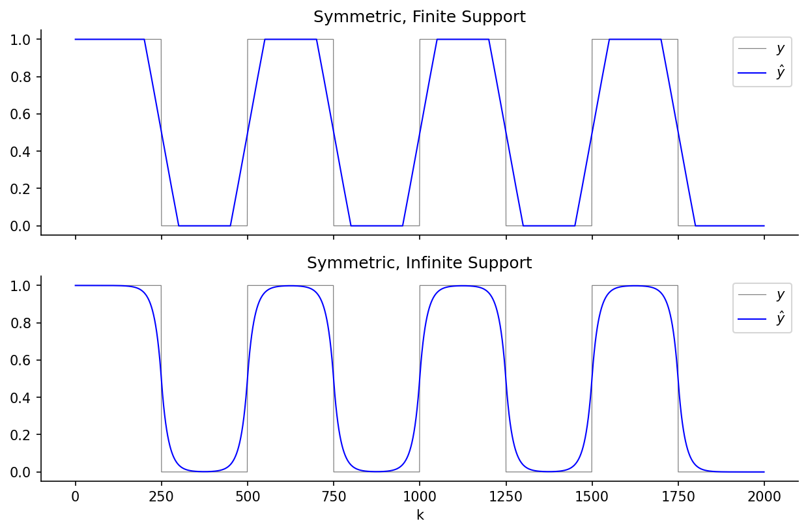
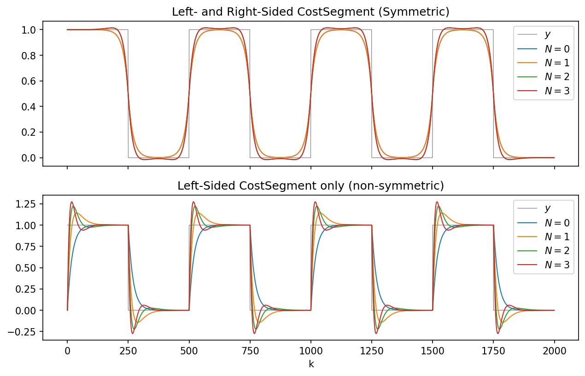
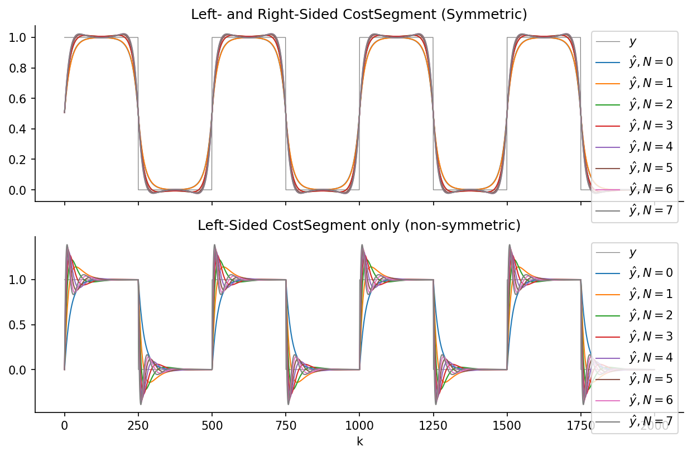
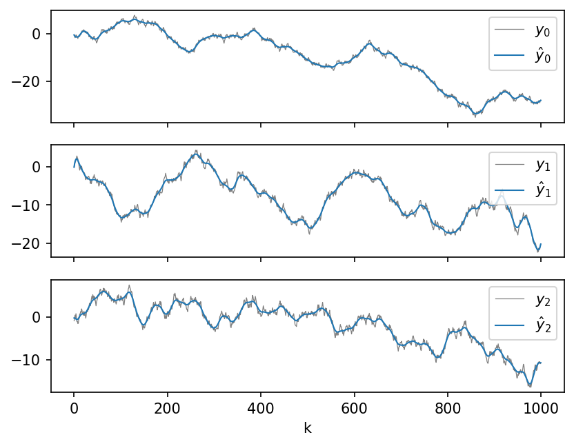
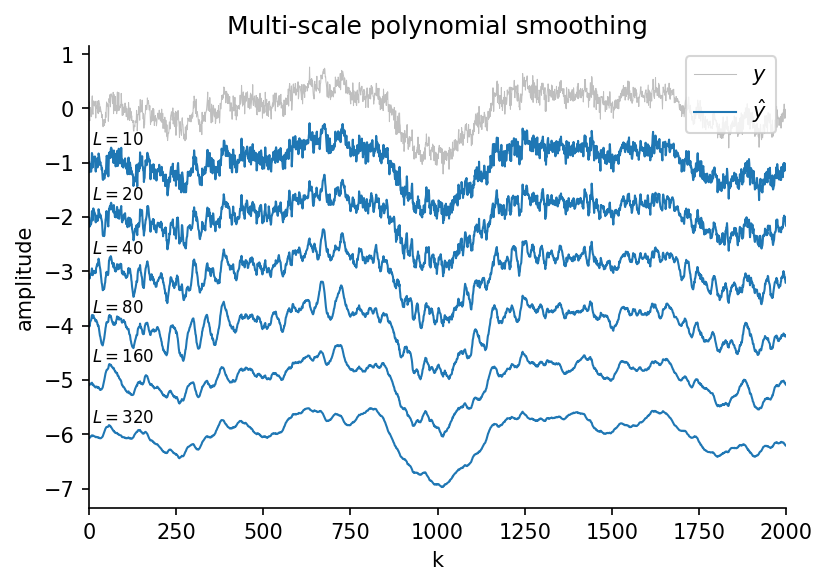
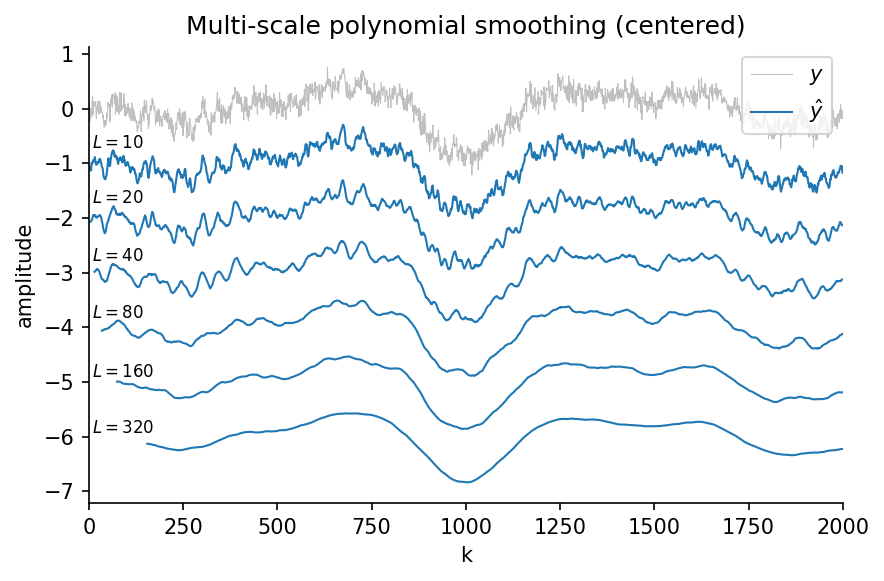
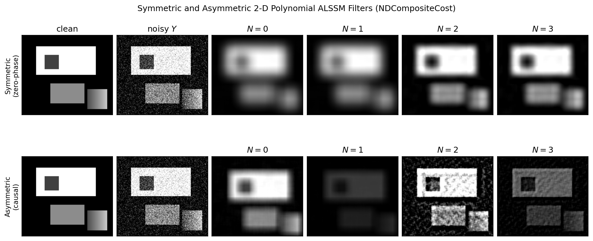

Application and Productive Examples
Application-level examples showing how to use lmlib on realistic
signal-processing tasks, grouped by topic. Each thumbnail links to a full page
with the plot(s), console output, any data files, and the complete source code.
Detection
Advanced event detection with ALSSMs.
Filtering
ALSSM-based signal filters.
 |
Symmetric Moving Average Filters with ALSSMs [ex121.0]
Applies a CompositeCost with a two-sided symmetric window as a symmetric moving average filter of length L=100. A degree-0 polynomial ALSSM (i.e. a constant model) is combined with a forward left segment and a backward right segment of equal length. The resulting filter is equivalent to a finite-impulse-response... |
 |
Symmetric and Non-Symmetric Polynomial Filters with ALSSMs [ex122.0]
Applies CompositeCost instances with polynomial ALSSMs of degrees 0 through 3 to a rectangular test signal. Two filter configurations are shown for each polynomial degree: • Symmetric filter — a forward left window and a backward right window of equal size, yielding a zero-phase (non-causal) smoother. • Left... |
 |
Symmetric and Non-Symmetric Polynomial Filters with Meixner Basis [ex122.1]
Applies CompositeCost instances with AlssmPolyMeixner of degrees 0 through 7 to a rectangular test signal. The Meixner basis is orthogonal under the exponential (geometric) window weight, giving a well-conditioned Gram matrix for semi-infinite windows. This makes it the preferred polynomial basis for recursive least-squares filtering with exponential windows,... |
 |
Multi-Channel Symmetric Signal Filter [ex123.0]
Applies a CompositeCost with a symmetric two-sided window as a symmetric linear filter to a multi-channel signal. A degree-5 polynomial ALSSM is fitted over equal-length left and right windows. The same model is applied in parallel to all channels using the multi-channel (MC) output form of the ALSSM.... |
 |
Multi-Scale Polynomial (Savitzky-Golay) Smoothing [ex125.0]
Smooths a noisy single-channel EEG signal at a dyadic family of window lengths L \in {10, 20, 40, 80, 160, 320} with polynomial ALSSMs, and contrasts two mathematically equivalent ways of obtaining the multi-scale result: • Per-scale RLS — a fresh RLSAlssm over a CompositeCost is run for... |
 |
Centered Multi-Scale Polynomial (Savitzky-Golay) Smoothing [ex125.1]
Companion to [ex125.0] (example-ex125.0-multiscale-filter.py), but using the symmetric, zero-lag centered windows that Savitzky-Golay smoothing normally uses (FORWARD segment a = -L/2, b = L/2 - 1) instead of one-sided BACKWARD windows. As before, two mathematically equivalent methods are compared: • Per-scale RLS — one RLSAlssm.fit() over a CompositeCost... |
 |
Symmetric and Non-Symmetric 2-D Polynomial Filters with ALSSMs [ex126.0]
2-D extension of the 1-D polynomial smoother shown in ex122.0. Instead of a single CompositeCost, a separable NDCompositeCost is built from one polynomial CompositeCost per image axis and applied to a noisy 2-D signal (an image) in a single fit call. At every pixel the filter fits a... |
Polynomials Calculus
Calculus and cost functions with polynomials.
Event Detection with Two-Sided Line Models
Onset and peak detection with Two-Sided Line Models (TSLMs). Examples published in "Onset Detection of Pulse-Shaped Bioelectrical Signals Using Linear State Space Models" [Waldmann2022].
Convolution
Correlation (or convolution) and matched filters. The method was published in "Windowed State Space Filters for Peak Interference Suppression in Neural Spike Sorting" [Baeriswyl2022].
Shift and Time Dilation Estimation
Shift and Time Dilation Estimation with localized polynomial signal models. Examples published in "Signal Analysis Using Local Polynomial Approximations" [Wildhaber2020].
N Dimensional Signal Processing
Processing of N-dimensional signals. Examples published in "Multi-Resolution Autonomous Linear State Space Filters for N-Dimensional Signals" [Baeriswyl2025].